RATP
Amélioration de l’expérience utilisateur
dans les transports
francilien
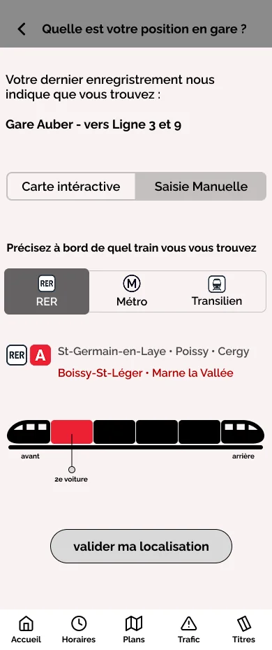
Client
RATP, la région île de France et l’Association des Usagers des Transports.
Contexte
Amélioration l’expérience utilisateur dans les transports francilien : une exploration ethnographique.
Identifier et comprendre les frictions au moyen d’une approche ethnographique, pour proposer des améliorations concrètes de l'expérience utilisateur dans les transports en commun.
Rôle
UX Researcher
Outils
-
Figma
-
FigJam
-
Canva
Team
3 UX Researcher
Durée
2 semaines
1/ Recherche utilisateur
Afin de comprendre les utilisateurs, nous les avons observés en action sur le terrain (gare RATP) afin d'étudier leurs comportements, besoins, frustrations et attentes lors de leur interaction avec le service. Cette démarche nous aide à bien les comprendre ensuite à identifier des axes d'amélioration pour optimiser leur expérience.
2/ Méthodes d’observations
Fly on the wall : nous avons observé comment les utilisateurs interagissent avec le service RATP, sans qu'ils soient conscients de notre présence. Cette approche permet de recueillir des informations authentiques, sans perturber leur expérience ni influencer leurs actions.
3/ Stratégie d’observation
Pour diversifier notre étude, nous avons constitué deux équipes de deux personnes, chacune étant affectée à une station différente :
République et Goncourt. Le choix de ces deux stations, de par leurs tailles et leurs importances variables, devait nous permettre de recueillir des données plus riches et variées et ensuite les comparer.
Observations - République & Goncourt
Biais Cognitif d’observation
Hypothèses
-
Beaucoup de personnes rencontrent des difficultés lors de l'achat de tickets aux distributeurs automatiques.
-
Les services d’aide ne sont pas très visibles.
-
Accessibilité PMR pas adapté à tous ou même inexistante.
-
Les informations sont souvent dispersées sur différents supports visuels et sonores sans une logique claire, leur assimilation et leur compréhension sont rendus difficile par les voyageurs.
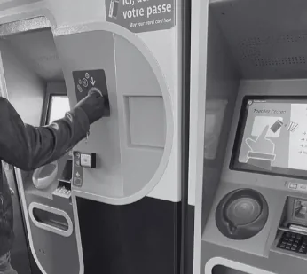
Achat de ticket
Recherche
Au cours de notre phase de recherche, nous avons interviewé 7 utilisateurs : 6 interviews et 1 guerilla.
Nous avons abordé plusieurs sujets majeurs :
-
L'utilisation des bornes de soutien
-
la clarté des panneaux
-
la capacité de localisation des points d'information
-
les problèmes rencontrés
-
les problèmes d'accessibilité, de signalétique, de guichet et d'éco-conception
Stratégie :
La stratégie de l’interview consiste à commencer par une brève présentation, suivie d'une question d'ouverture pour mettre l'interviewé à l'aise.
Ensuite, des questions ouvertes pas biaisés sont posées afin de ne pas influencer ses réponses.
Les axes abordés sont : son expérience personnelle avec les transports RATP, les défis rencontrés lors de son utilisation, ses besoins et attentes vis-à-vis de la RATP, ses préférences personnelles en matière d’utilisation des transports, ainsi que ses suggestions pour améliorer l’expérience utilisateur.
Questionnaire exploratoire
Comprendre le public cible et ses défis était notre priorité. Nous avons d'abord créé une enquête en ligne et l'avons partagée avec différentes communautés concernées. En quelques jours seulement, nous avons reçu 26 réponses. À partir de celles-ci, nous avons mieux compris notre cible.
Outil : Google Form
22 questions
Stratégie :
Notre questionnaire est structuré sur trois axes :
-
Satisfaction globale : Afin de pouvoir mieux cerner les difficultés des voyageurs, nous avons souhaité évaluer différents aspects de leur expérience, sur des critères tels que la qualité de la signalétique, l'accessibilité en station, le niveau de sécurité ressenti et la propreté des lieux.
-
Attentes et besoins : Le souhait a été de poser des questions permettant aux répondants de répondre avec leurs propres mots sur les points à améliorer et les fonctionnalités souhaitées.
-
Profil de l'utilisateur : Collecter des données sociodémographiques pour mieux cerner notre public cible.
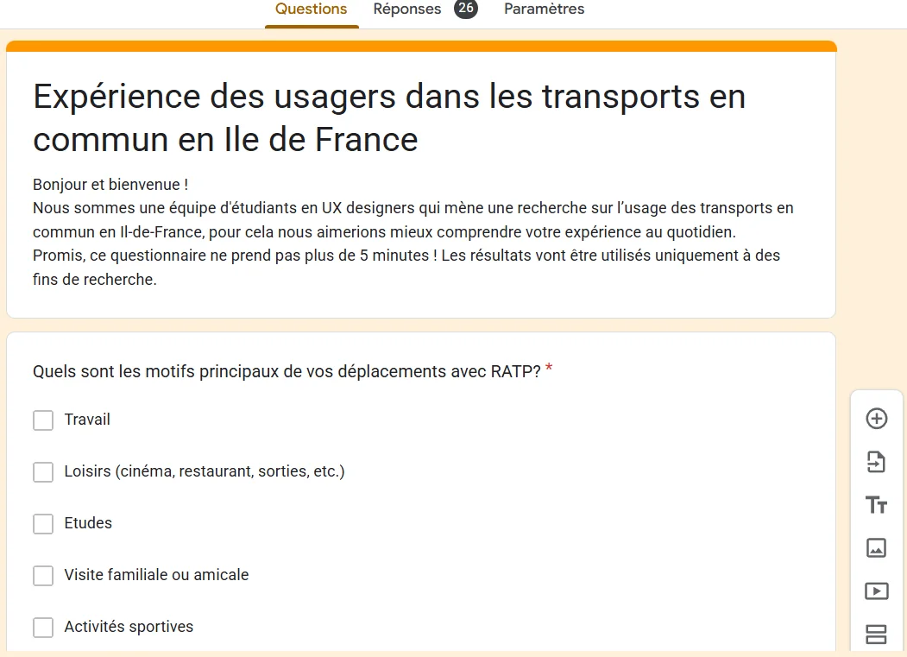
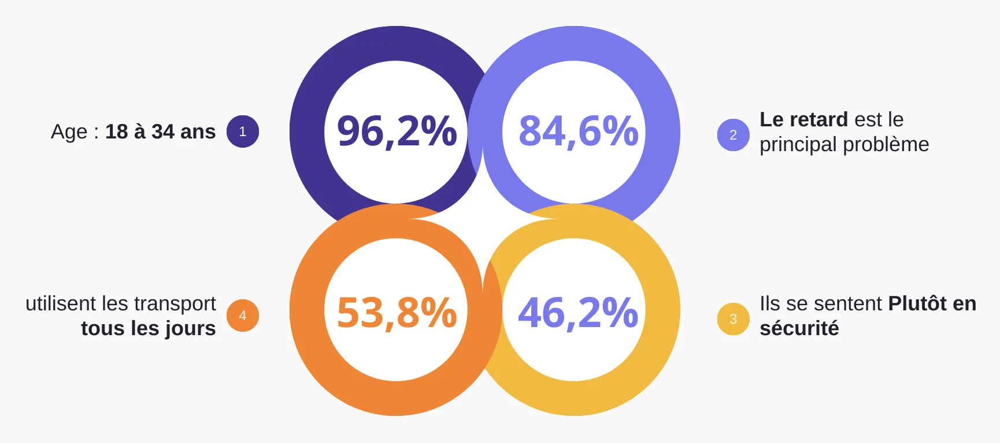
Data visualisation du questionnaire
Data visualisation du questionnaire
Une fois que nous avons obtenu les réponses à notre questionnaire, les chiffres à retenir sont les suivants 👉
Personas
Nous voulions mieux comprendre les objectifs, besoins, expériences et comportements de nos utilisateurs. Pour cela, nous avons créé deux personas pour chacun de nos segments d’utilisateurs. Ils étaient basés sur des interviews et des sondages, et nous les avons mis à jour tout au long du projet à mesure que nous recueillions davantage de données. Nous avons utilisé ces personas chaque fois que nous avions besoin de prendre du recul et de reconsidérer nos idées initiales.
User Journey Map
Nous avons créé User Journey Map pour mieux comprendre comment les utilisateurs trouvent et interagissent avec le service et pour découvrir des opportunités d'amélioration.
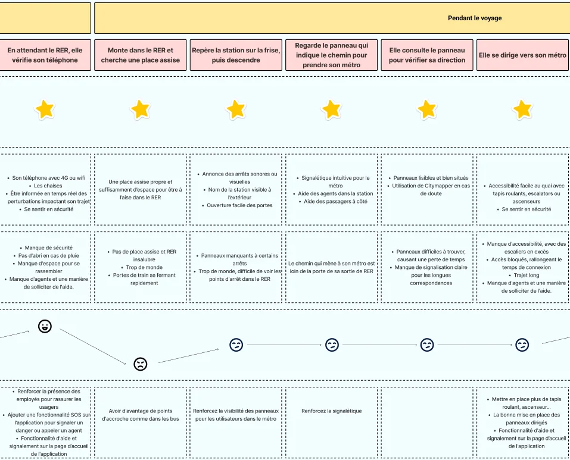
User Journey Map
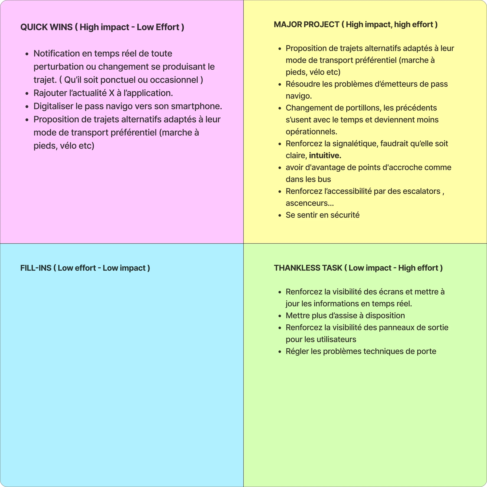
Matrice de priorisation
Matrice de priorités d'action
Une fois que nous avons effectué nos recherches et que nous avons défini notre persona ainsi que le parcours de nos utilisateurs, nous avons détecté plusieurs problèmes. Pour choisir sur lequel travailler en premier, nous avons utilisé la matrice de priorisation.
Nous avons donc décidé de travailler sur le renforcement de la sécurité des utilisateurs.
Cas d'usage
Je suis une étudiante utilisatrice des transports en commun RATP.
Lorsque je sors la nuit ou que je rentre tard, je ne me sens pas en sécurité.
Ce qui compte pour moi, c’est de pouvoir sortir quand je le souhaite tout en me sentant à l’aise et en sécurité.
Mais, il y a souvent des actes de violence, des agressions, des personnes en état d’ébriété, et un manque apparent de sécurité dans le réseau RATP.
Par conséquent, je dois toujours être vigilante, éviter de sortir seule, éviter de m’attarder la nuit, et privilégier des environnements où il y a du monde.
Storyboard
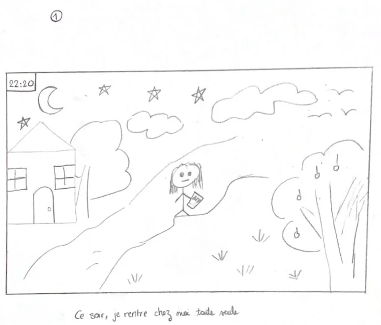
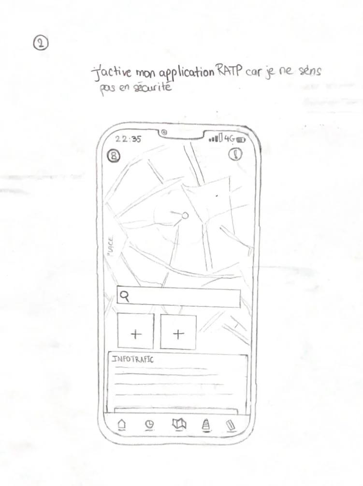
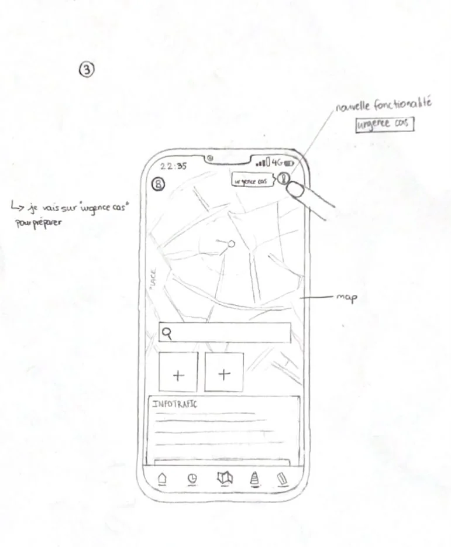
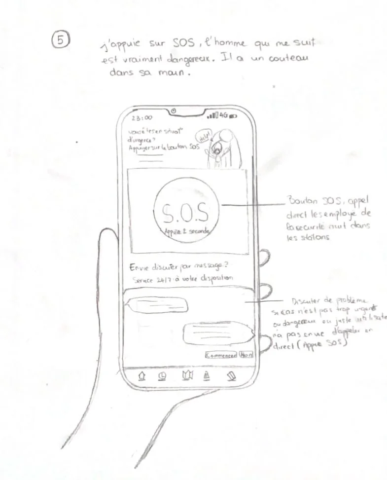
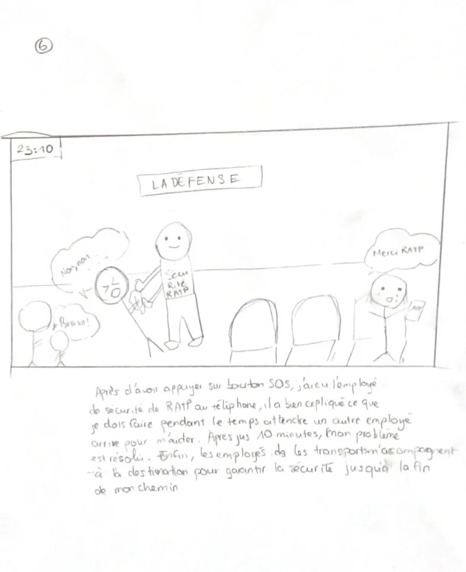
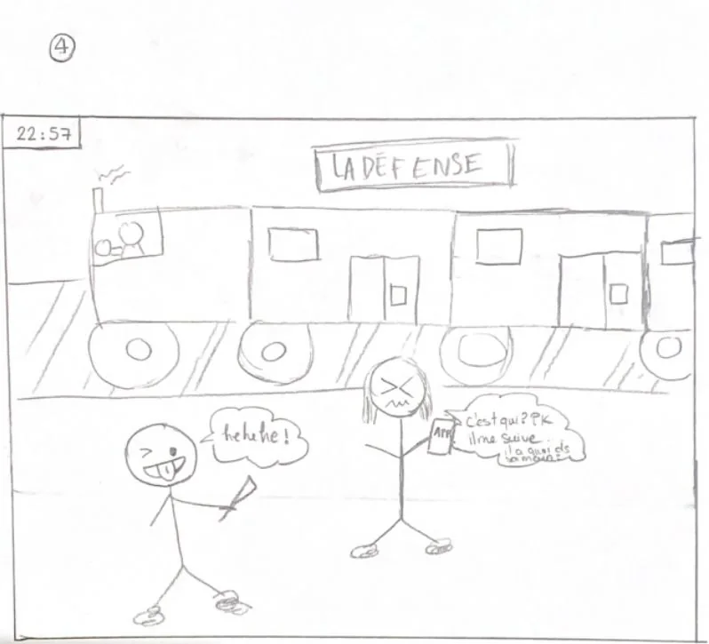
Wireframe
Notre solution se décompose en deux fonctionnalités complémentaires au sein de l’application Bonjour RATP:
1. Assistance Sécurité
2. Filtre “Trajet Sécurisé”
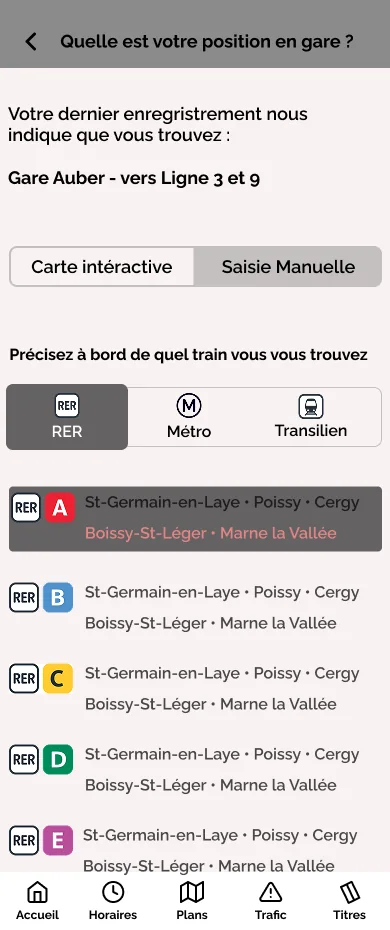
Solution-1 : Assistance Sécurité
Elle offre une assistance immédiate et adaptée aux situations d’insécurité ou de problème rencontrées dans les transports.
Fonctionnement :
Sécurité et responsabilité
-
Accessible uniquement pour les utilisateurs ayant un compte vérifié (ex. : via FranceConnect).
-
Sanctions possibles en cas de mauvais usage
Accès à la fonctionnalité
-
Sur la page d’accueil de l’application, un bouton bien visible est dédié à la fonctionnalité Aide - Bouclier portant l’inscription “Aide”
-
Accessible sans réseau pour garantir une utilisation dans toutes les situations.
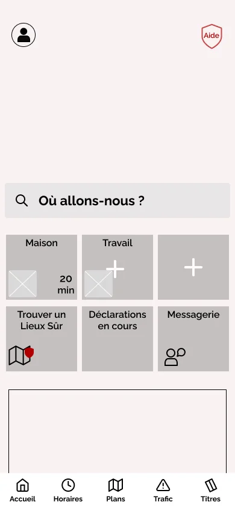
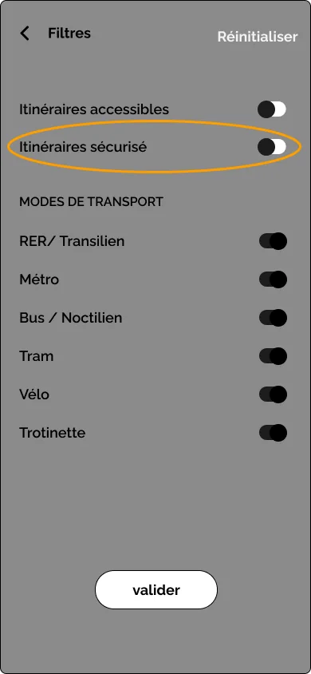
Solution - 2 : Filtre trajets sécurisés
Elle permet aux usagers de personnaliser leurs trajets pour privilégier les itinéraires offrant une sécurité renforcée.
Fonctionnement :
Accès à la fonctionnalité
-
Accessible pour chaque utilisateur.
Activation du filtre
-
Lors de la planification d’un trajet sur l’application, une option "Trajets Sécurisés" est proposée.
Résultats Personnalisés
Les itinéraires sécurisés sont affichés avec des indications claires :
-
Temps de trajet.
-
Nombre de correspondances.
-
Zones sécurisées signalées sur la carte.
-
Comparaison possible avec des itinéraires classiques.
-

-

-

-
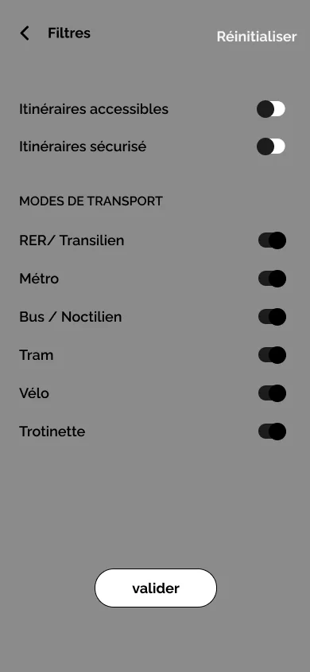
-
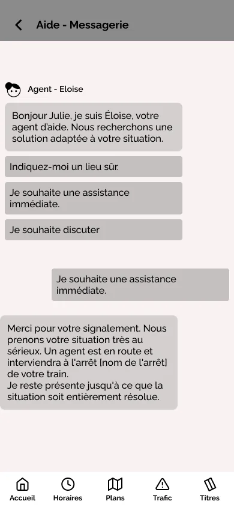
-
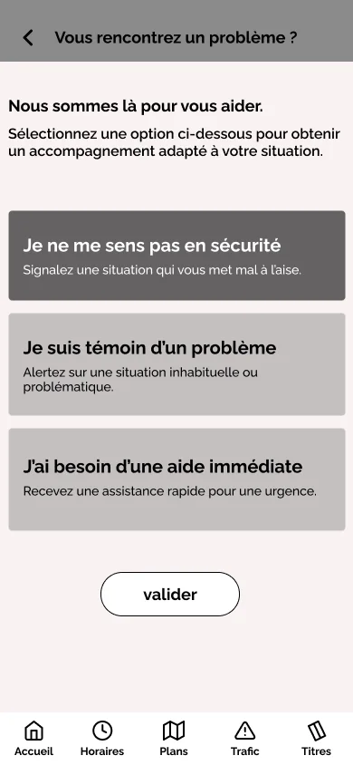